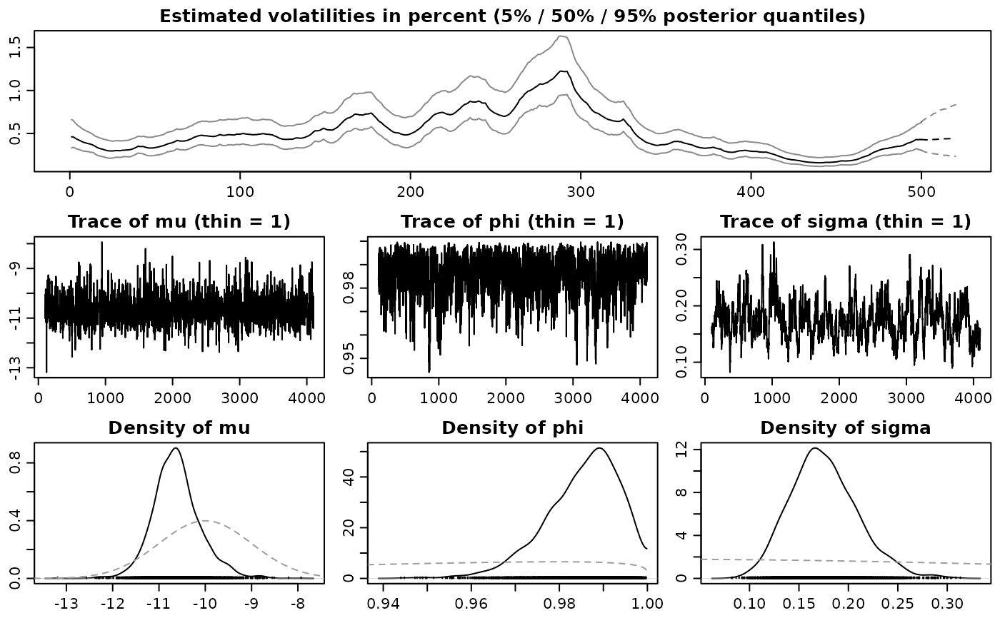

R/stochvol-package.R
stochvol-package.RdThis package provides an efficient algorithm for fully Bayesian estimation of stochastic volatility (SV) models via Markov chain Monte Carlo (MCMC) methods. Methodological details are given in Kastner and Frühwirth-Schnatter (2014); the most common use cases are described in Kastner (2016). Recently, the package has been extended to allow for the leverage effect.
Bayesian inference for stochastic volatility models using MCMC methods highly depends on actual parameter values in terms of sampling efficiency. While draws from the posterior utilizing the standard centered parameterization break down when the volatility of volatility parameter in the latent state equation is small, non-centered versions of the model show deficiencies for highly persistent latent variable series. The novel approach of ancillarity-sufficiency interweaving (Yu and Meng, 2011) has recently been shown to aid in overcoming these issues for a broad class of multilevel models. This package provides software for ``combining best of different worlds'' which allows for inference for parameter constellations that have previously been infeasible to estimate without the need to select a particular parameterization beforehand.
This package is currently in active development. Your comments, suggestions and requests are warmly welcome!
Kastner, G. and Frühwirth-Schnatter, S. (2014). Ancillarity-Sufficiency Interweaving Strategy (ASIS) for Boosting MCMC Estimation of Stochastic Volatility Models. Computational Statistics & Data Analysis, 76, 408--423, doi: 10.1016/j.csda.2013.01.002 .
Kastner, G. (2016). Dealing with Stochastic Volatility in Time Series Using the R Package stochvol. Journal of Statistical Software, 69(5), 1--30, doi: 10.18637/jss.v069.i05 .
Yu, Y. and Meng, X.-L. (2011). To Center or Not to Center: That is Not the Question---An Ancillarity-Suffiency Interweaving Strategy (ASIS) for Boosting MCMC Efficiency. Journal of Computational and Graphical Statistics, 20(3), 531--570, doi: 10.1198/jcgs.2011.203main .
Gregor Kastner gregor.kastner@wu.ac.at, Darjus Hosszejni darjus.hosszejni@wu.ac.at
## Simulate a highly persistent SV process sim <- svsim(500, mu = -10, phi = 0.99, sigma = 0.2) ## Obtain 4000 draws from the sampler (that's too few!) draws <- svsample(sim$y, draws = 4000, burnin = 100, priormu = c(-10, 1), priorphi = c(20, 1.2), priorsigma = 0.2)#>#>## Predict 20 days ahead fore <- predict(draws, 20) ## plot the results plot(draws, forecast = fore)if (FALSE) { ## Simulate an SV process with leverage sim <- svsim(500, mu = -10, phi = 0.95, sigma = 0.2, rho=-0.5) ## Obtain 8000 draws from the sampler (that's too little!) draws <- svsample(sim$y, draws = 4000, burnin = 3000, priormu = c(-10, 1), priorphi = c(20, 1.2), priorsigma = 0.2, priorrho = c(1, 1)) ## Predict 20 days ahead fore <- predict(draws, 20) ## plot the results plot(draws, forecast = fore) }